佐田岬燈台点灯100周年記念事業により、岬先端が再整備されました< 椿山展望台 / 愛媛県伊方町 >
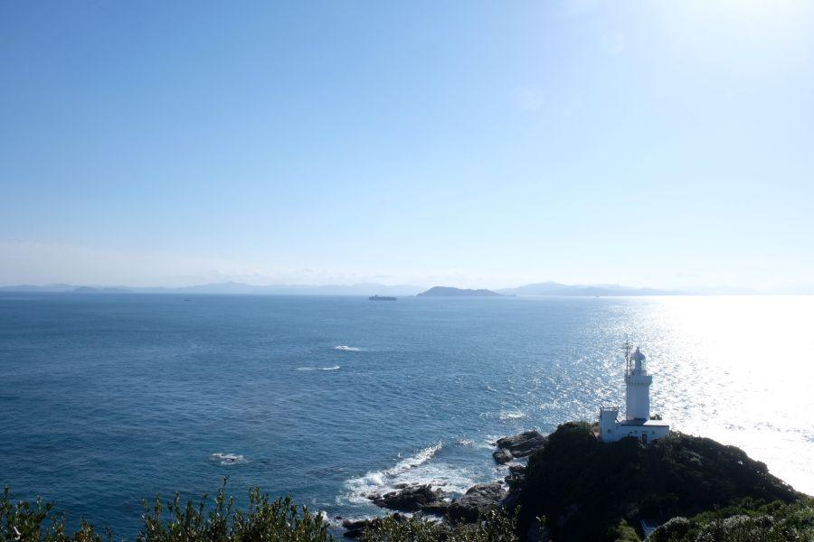
四国愛媛の西の端、ながーく伸びた "佐田岬半島"
半島付け根から先端までの距離約40kmは、「日本一細長い半島」と呼ばれる。
灯台がある佐田岬先端から 対岸である九州大分の佐賀関半島までの距離は 約16km。
その間の海は "速吸の瀬戸" と呼ばれ、現在はブランド魚である関アジ・関サバの好漁場。
かつては軍事上重要な拠点として、陸軍によって軍事要塞が築かれました。
佐田岬燈台点灯100周年記念事業によって、灯台付近の再整備が行われました
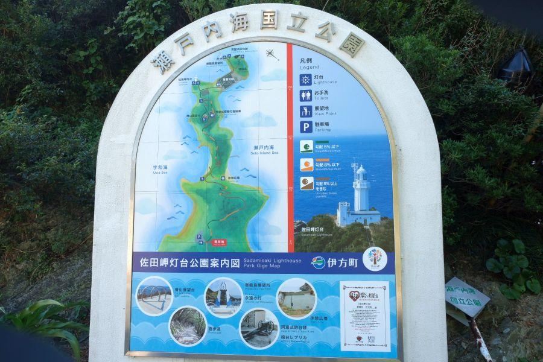
佐田岬先端の灯台までは、県道256号の終点にある駐車場に自動車を停めて、徒歩で行くことができる。
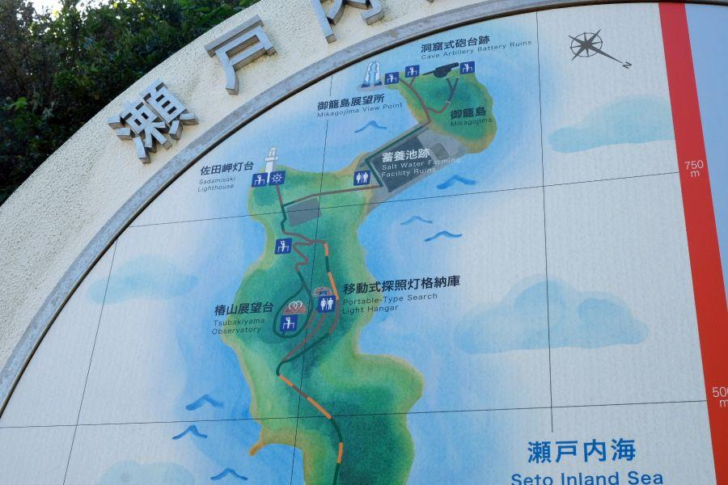
元は陸軍が築いた軍道が、後に国立公園として遊歩道となり、岬へ歩いて行くことができるようになりました。
近年 自治体の手によって更なる整備が行われ、佐田岬燈台の更に先。御籠島(みかごじま)に容易に行くことができるようになった。
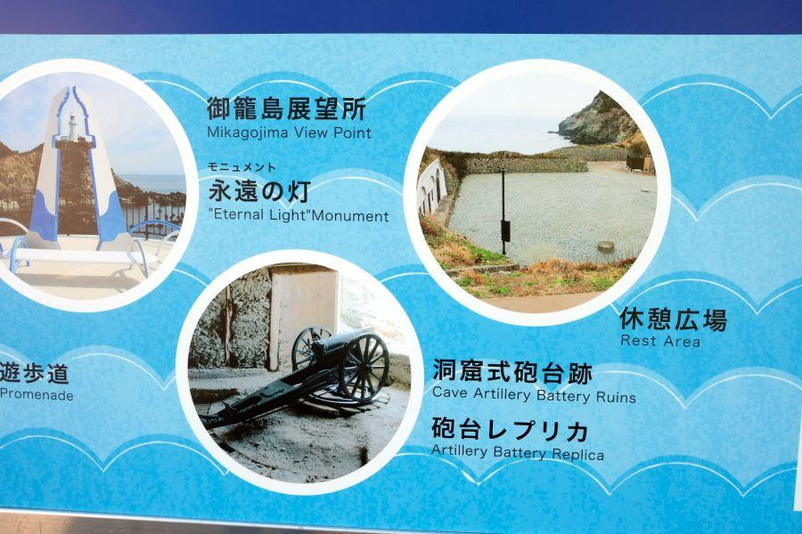
御籠島(みかごじま)と言えば、穹窖砲台(きゅうこうほうだい)こと 佐田岬第四砲台が置かれた島。
戦後 英国を中心とする進駐軍によって爆破処理が行われてから、長らく野ざらしの状態が続いていた。
平成29年(2017)
「佐田岬灯台点灯100周年記念」 事業の一つとして、伊方町によって佐田岬灯台公園一帯が再整備が行われ、御籠島展望所や、点灯100周年モニュメントが設置。
第四砲台付近も整備され、砲台内部へ進入する道が整備されました。
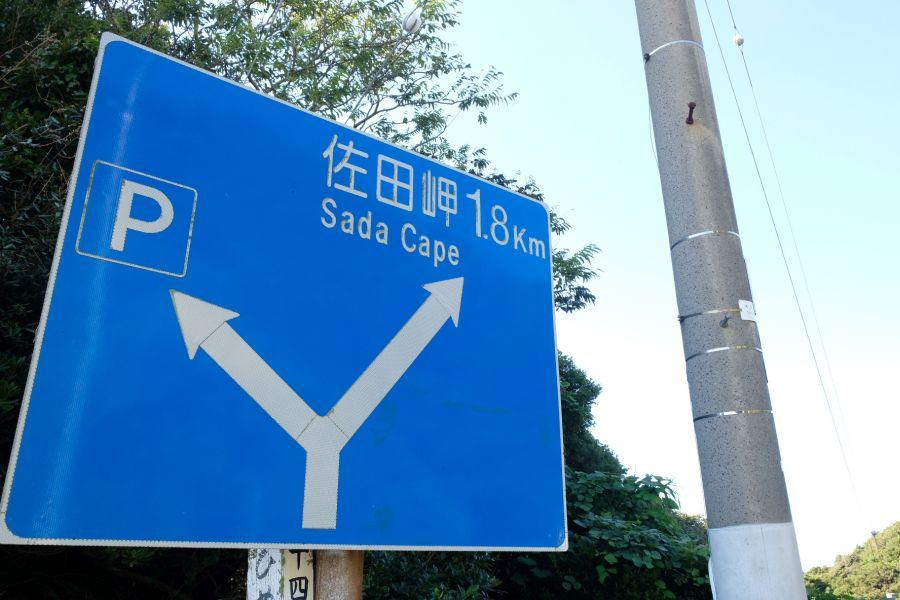
佐田岬駐車場から灯台までは 下って登ってone way約30分の道のり。帰りはその逆。
楽チンな道のりではないので、心して向かいましょう。
椿山中腹にある要塞の遺構
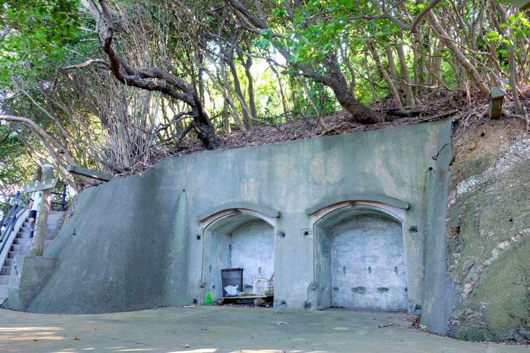
灯台の手前、椿山(つばきやま)と呼ばれる地点にある壕。
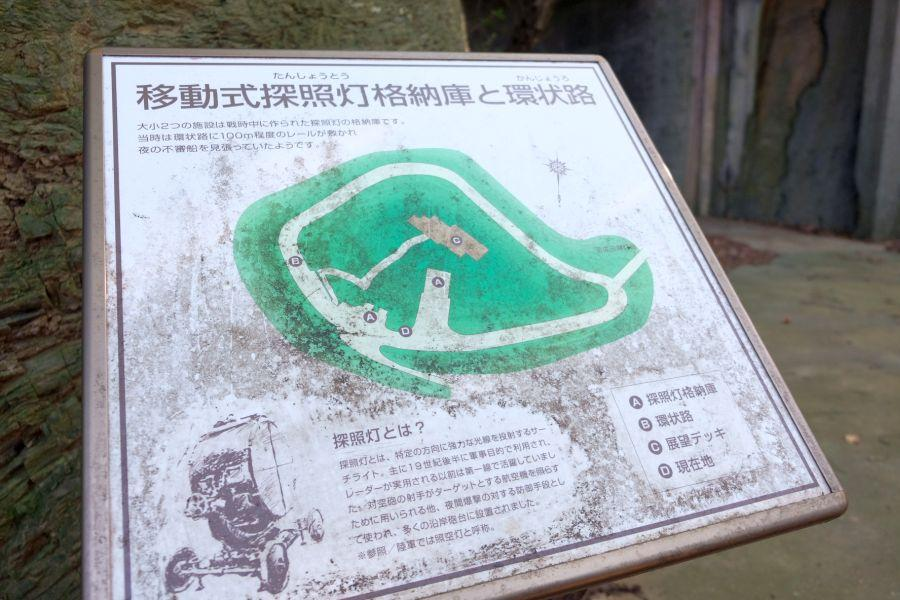
こちらの壕には 要塞当時、探照灯(サーチライト)が格納されていました。
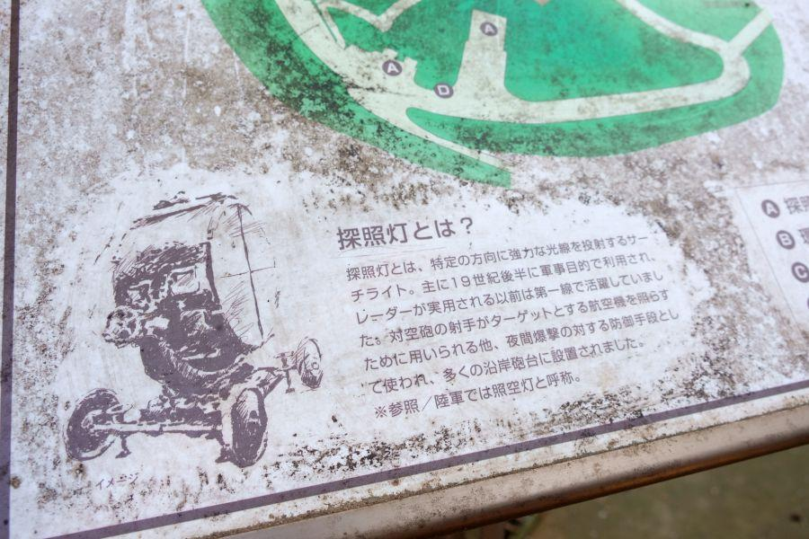
探照灯とは、照らした方向に強力な光を投射する道具。
砲台があるところにセットで設置され、夜間の沿岸警備など に使用されました。
この場所では椿山中腹に築かれた環状路にレールが敷かれ、360度の哨戒(しょうかい、敵機・敵艦を監視すること)を行うことが可能だったようです。
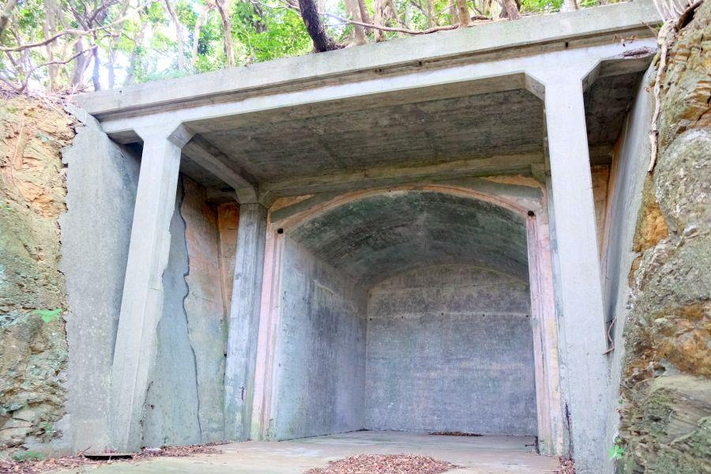
東側... 奥行きが浅く入口が二つ
西側... 奥行きが深く 壕自体が巨大
探照灯の大きさ様々でしょうが、
これだけの大きさのものであれば 人が運ぶわけにいかず、レールに乗せて周回させる、というのも納得です。
壁にうっすら迷彩塗装の跡が見て取れます。
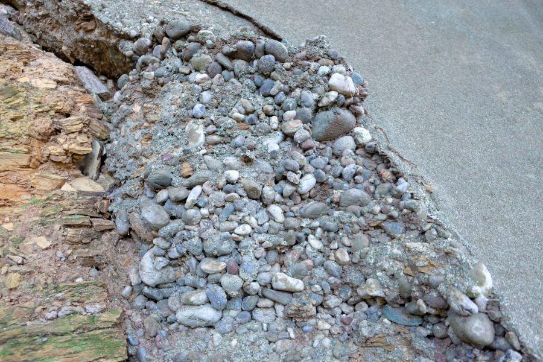
格納庫の表面は コンクリートで固められていますが、端っこを見ると徐々に崩れかかっているのがわかります。
中は小石だらけ...
佐田岬先端に 探照灯格納庫を含む第三・第四砲台が整備されたのは、昭和20年。戦争が終わる年。
鉄、コンクリート... 全ての資材が不足していました。
軍へは優先して物資が回されていたのでしょうが、表面のコンクリートの厚さを見る限り 軍事施設の建造も辛うじて行われていた、相当困窮していたことが見て取れます。
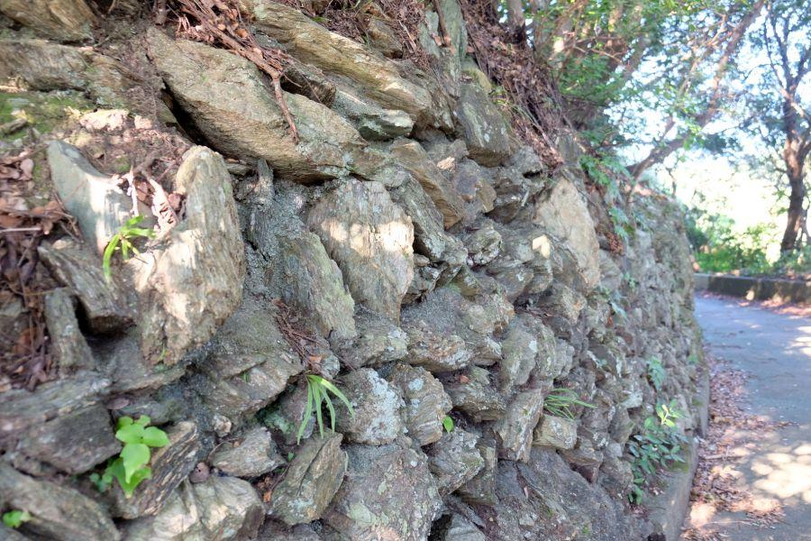
椿山中腹を一周する環状路(かつての探照灯周回路)
壁面には石が積まれていますが、こちらは段々畑に見せかけた 擬装工作の一つです。
愛媛県南西部。南予と呼ばれる地域一帯は 平地が乏しく、遊子水荷浦に代表されるような、段々畑が多い。
先祖代々 石垣を築き、猫の額ほどの畑にじゃがいもを植え、天水を頼りに なんとか暮らしていた...
このような 地域独特の景観を、敵を欺くのに取り入れたようです。
積まれた石の間に コンクリートが流し込まれて補強されていることが、その証。
九州大分を望む展望台

椿山の頂上は 現在展望デッキとして整備され、天気の良い日には 九州大分を大きく見渡すことが出来る。
佐田岬灯台より高い位置になるので、眺望としては 佐田岬随一。
写真では灯台のずっと向こうに、佐賀関にある精錬所の大煙突が きれいに見えています。
灯台へ向かう道から 少し迂回が必要ですが、寄り道お勧めです。
眺めの良いこの場所のこと。戦時中は監視所が置かれ、兵隊さんが交代で監視を行っていたことでしょう。
佐田岬椿山展望台
< 自家用車 >
高松駅から 約4時間、257km
松山空港から 約2時間20分、105km
※ 主な地点からの最速・最短距離
関連記事
2017,10/27 四国最先端の岬は かつての軍事要塞 < 佐田岬・穹窖砲台 / 愛媛県 >